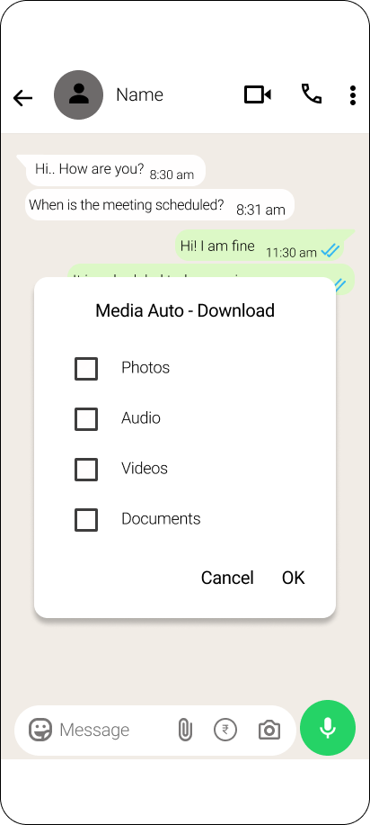

Overview
WhatsApp users receive a large amount of media content every day through personal chats, groups, and work conversations. The existing auto-download settings provide limited control, applying the same preferences across all conversations.
This project focuses on redesigning the media auto-download experience by introducing granular, per-chat media controls, allowing users to customize download preferences based on their individual needs.
The redesigned feature enables users to decide what media gets downloaded automatically (photos, videos, audio, and documents) for specific chats, helping improve storage management, reduce unwanted downloads, and create a more personalized messaging experience.
Problem Statement
WhatsApp users often receive excessive media content from multiple chats and groups, resulting in:
- Unnecessary storage consumption due to unwanted downloads
- Difficulty managing media from different conversations
- Important files getting lost among irrelevant content
- Lack of control over which chats should automatically download media
- Time spent manually deleting unwanted photos and videos
The current auto-download settings do not provide enough flexibility for users with different communication needs.
Research Goal
To understand user behaviors and challenges around media downloads and design a flexible solution that improves control, discoverability, and storage efficiency.
The Challenge
Designing a flexible media download experience that gives users more control over photos, videos, audio, and documents while keeping the settings simple and easy to use.
Analysis
To understand how user behaviors drive downloading habits, we conducted a comparative persona study highlighting differences in usage patterns and pain points between high-volume groups and study-focused students.
| Category | Haritha (Age 32) Petrol Pump Service Provider |
Rajeshwari (Age 18) B.Sc. Computer Science Student |
|---|---|---|
| Profile | Petrol Pump Service Provider | B.Sc. Computer Science Student |
| Usage Behavior |
|
|
| Pain Points |
|
|
| Needs & Expectations |
|
|
Key Insights
Control at the relationship level
Settings live inside the chat, not global preferences — so a noisy group and a close contact can have entirely different rules.
Information architectureFour independent toggles
Photos, Videos, Audio, and Documents are decoupled — allowing photos on mobile data while blocking videos is a zero-compromise choice.
UX decisionOverride, not replace
Per-chat settings always win over the global default. Users keep their baseline intact while fine-tuning specific conversations.
System logicLightweight interaction
A popup with checkboxes and a Save/Cancel pair keeps the interaction under three taps — no navigation away from the chat.
UX decisionEmpathy Mapping
"I don't want every video from this group clogging my storage, but I still want photos from my family chat to download automatically"
01/ SAYS
- Haritha, Petrol pump service provider
- Everyday in family and office groups
- Auto - download option for specific contacts
- Per chat auto - download option
02/ THINKS
- Family and office groups
- Yes, office bills
- No, Had to search for an option.
- Yes, Especially for office groups
- Yes, But it doesn't solve the group problem
- Yes, It makes it easy
- Very rare
03/ FEELS
- Yes, storage gets full
- Yes
- Very important
04/ DOES
- Auto - download on for photos
User Persona
Haritha
32 | Female | Petrol Bunk Service Provider | ChennaiBackground
Based in Chennai, Haritha runs daily business operations at a petrol pump station, handling logbooks, customer logs, and receipts.
Scenario
During busy work hours, multiple groups send images and videos. She wants work documents to be available while avoiding unnecessary media downloads.
User Quote
"I don't want every video from this group clogging my storage, but I still want photos from my family chat to download automatically."
Goals
- Control what media gets downloaded
- Quickly access important work documents
- Reduce time spent managing storage
Pain Points
- Automatic downloads consume storage
- Important files get mixed with unwanted media
- No chat-specific download preferences
Design Implication
Provide per-chat media download controls with separate preferences for photos, videos, audio, and documents.
Competitor Analysis
To identify product opportunities, this analysis evaluates the media auto-download capabilities, strengths, and constraints of key messaging competitors in the industry.
| Competitor | Media Download Controls | Strengths | Limitations | Design Opportunity |
|---|---|---|---|---|
| Telegram | Provides automatic media download controls based on mobile data, Wi-Fi, roaming, and chat type. Users can customize media limits. | Advanced customization and better control over media downloads. | Settings can feel complex for new users due to multiple options. | Create simpler per-chat media controls with clear recommendations. |
| Signal | Allows users to control automatic downloads for different media types like images, videos, and documents. | Strong privacy-focused experience with simple settings. | Limited personalization based on individual chats. | Introduce chat-specific download preferences while maintaining simplicity. |
| Messenger | Provides automatic media handling with storage-related options. | Easy-to-understand interface and familiar interaction patterns. | Limited control over specific media categories and chats. | Provide users with more granular control over content types. |
| WhatsApp (Current) | Allows users to enable/disable auto-download based on network type (Mobile Data, Wi-Fi, Roaming). | Simple and familiar experience. | Same settings apply broadly; lacks individual chat/group customization. | Add personalized per-chat media download settings. |
Key Opportunity Identified
Existing platforms provide basic media download controls, but users still need a simpler way to customize downloads based on individual chats, content type, and personal priorities.
Design Solution
Introduced a 'Media auto-download' toggle option in the chat's top-right options dropdown. Clicking this opens a clear popup dialog checklist (Photos, Audio, Videos, Documents) allowing immediate custom downloading preferences at the thread level.
Before: Old screen
After: Redesigned Screen
Information architecture
The structural blueprint maps the entry points and controls for media downloads, showing how thread-level rules seamlessly integrate with global defaults without creating navigation overhead.
User Flow
The sequential steps mapping how a user accesses specific chat options, opens the auto-download settings modal, selects preferences, and saves the customized rules without any step numbers.
High Fidelity UI Design
The high-fidelity mockups show the user journey from opening the application through to customizing individual chat auto-download preferences. Each screen is designed to integrate seamlessly into WhatsApp's clean interface style, ensuring controls are easy to find and use.



Impact
Enabled users to have more control over media downloads by allowing personalized settings for individual chats and groups.
Reduced unnecessary media downloads, helping users manage storage efficiently.
Improved accessibility to important files by ensuring users can prioritize content based on their needs.
Created a more personalized experience by adapting media management to different user behaviors and contexts.
Learnings
Users prefer flexible controls over one-size-fits-all settings when managing personal content.
Small improvements in discoverability and customization can significantly improve user confidence and satisfaction.
Understanding different user contexts (personal, professional, and group chats) is essential when designing productivity features.
Smart automation should support user decisions while keeping the experience simple and intuitive.